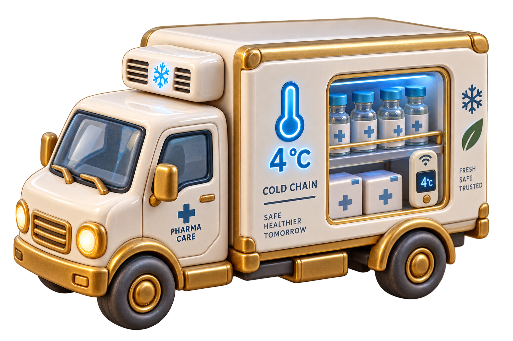
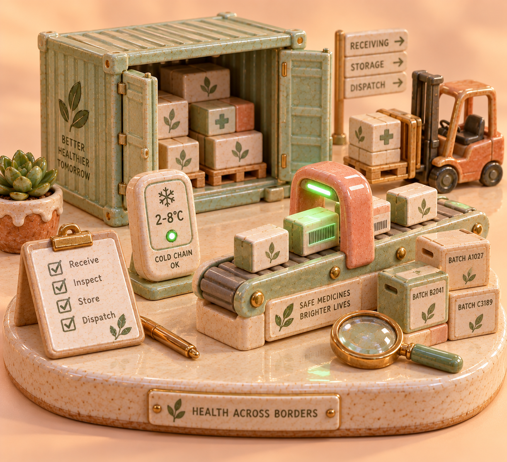

Information Integration & Architecture project
Is this medicine
genuine or fake?
A fake pack can look perfect. What gives it away is its records: a code the maker never issued, a shipment that got too warm, one barcode sold in two cities ten minutes apart.
These records sit in four separate databases on two PCs: pharmacy sales, distributor shipments, the national drug registry, and complaints. Phase 1 joins them to check a pack. Phase 2 deals with messy records: mistyped codes, duplicates and conflicts. Asali means genuine, nakali means fake.
4
Databases (plus an audit ledger)
2
PCs that hold them
4
Different storage types
2
Project phases
Example of a result
Novamox 500mg, trust score 100
All four databases agree, so it is genuine.
What the system catches
What's on this website
Three pages. Each one has numbered parts, and every part starts with a heading and a line saying what it is for.
Check a medicine
Type the code on a pack. See whether it is genuine, suspicious or fake, the trust score, the product's journey from factory to pharmacy, and the reasons.
Open Check a medicineDatabases
See the four databases and their tables, search the rows, and add, change or delete records. Also: the activity log, the audit check, and small tools for each integration problem.
Open DatabasesMatching & cleaning
Messy records: find which registered product a mistyped or camera-read code belongs to, see why that method was chosen, and clean duplicates, typos and conflicts (with undo).
Open Matching & cleaningThe pages share the same data. A product registered on the Databases page appears in Check a medicine and in Matching & cleaning, and a fix made in Matching & cleaning is seen by the other two. When PC1 and PC2 are two laptops, each change is also copied to the other laptop.
The problem
Why the data can't simply be put in one database
Four reasons. Because of them, the project leaves each database where it is and asks all of them through one middle layer (a mediator) instead of copying everything into one place.
Different owners
Pharmacies, transport companies and the government each own their data and will not hand it over to one shared system.
Different formats
JSON documents in one, SQL tables in another, a master list in the third and a web service in the fourth.
Different names for the same code
One pack is scan_code at the counter, batch_serial in transit, product_uid in the registry and item_ref in a complaint.
Some sources count more
A government recall is not one opinion to be averaged with the others. It must override everything, so the system first checks for such "hard stops" and only then weighs the rest.
How a check works, step by step
One question ("is this code genuine?") is turned into a query each database understands, the answers are collected, and the system decides what they add up to. This design is called a global-as-view (GAV) mediator.
Read the code and fix mistakes
Scanners misread letters and staff sometimes type a batch number instead of the product code. Before looking anything up, the system works out which real product code was meant (Phase 2 does this much more carefully).

Ask all four databases
The one question becomes four: a document search, two SQL queries and a web-service call, sent to both PCs. Each answer is converted into the same units and names on the way back.
Decide, then save the result
Hard stops come first: a recall, a blacklist or a code missing from the registry sets the score to zero on its own. Otherwise all findings are weighed into a score from 0 to 100, and the result is saved in a tamper-proof audit ledger.
Two PCs
Which PC holds which database
Pharmacies and distributors
The business side of the supply chain. It also serves this website.
Regulator and ministry
The government side. It holds the hard stops (recalls, blacklist) and the audit ledger. It also serves this website.
Both can run on one laptop, or on two laptops on the same network. A change made on one PC is copied to the other. If PC2 stops answering, the system still answers from the records it can see, and says so, instead of failing.
Problems the project solves
Eight standard data-integration problems (Phase 1). Each one can be tried on the Databases page. Phase 2 adds matching and cleaning of messy data on its own page.
One question, four databases
One question is rewritten into the language of each database, and the four answers are put back together into one report.
Nested data made flat
Data stored inside other data (a shop inside a district inside a state) is turned into simple rows that can be compared.
Different units
Temperatures in Fahrenheit or Kelvin, prices in dollars, times as computer timestamps: all converted to the same units before comparing.
Mistyped codes
A damaged or mistyped code is matched to the real product it means, and the reasoning is shown.
Settling disagreements
Written rules decide which database to believe when they disagree: the government first, then what is physically possible, then patient safety.
One PC goes offline
If PC2 is cut off, the system still answers from the data it can reach, and lowers its confidence.
A database changes its format
A database switches to a new code format and prices in paise. An adapter handles it without changing the rest of the system.
Linking records without a shared ID
No two databases use the same ID column. Batch number, product code and complaint reference are linked so that one pack stays one pack.
Examples
Four examples to try first
Each button opens Check a medicine with that code.
Not in the registry
It was sold in pharmacies, but the maker never issued this code.
Check this codeBroken cold chain
Genuine insulin that spent too long above 8 °C in transit.
Check this codeCopied barcode
Sold five times in three cities within 28 minutes. No pack travels that fast.
Check this codeWho it is for
Who would use it
At the counter
Patients
A plain answer before they take the medicine, not a database dump.
Behind the counter
Pharmacists
A recalled batch caught before it is dispensed, with the evidence attached.

At the border
Inspectors
An incident report made on the spot and saved in the tamper-proof audit ledger.
Phase 1
Check a medicine
Type a code and see whether it is genuine, suspicious or fake, and why.
Phase 2
Matching & cleaning
Find the real product behind a messy code, and clean duplicates, typos and conflicts in the databases.